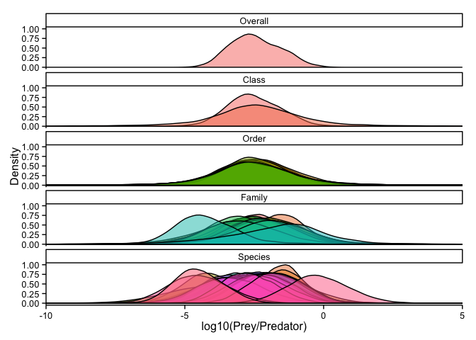

Posted on November 3, 2015 by Philipp Neubauer
Sources of variation in PPMRs: PT2 - JAGS analysis
Background
In a previous post I attempted a first comprehensive analysis of predator-prey diet data based on the dataset of Barnes et al. (2010). The comprehensive model included taxonomic, habitat and predation (predator size, feed type) effects as well as environmental covariates. While it upheld previous findings, it also seemed limited at inferring taxonomic variability at higher taxonomic levels.
In this post, I extend the analysis to a more complicated Bayesian model that employs a nested random effect structure that better represents the taxonomic hierarchy. The model is quite complex in that it models the taxonomic hierarchy as a series of draws from distributions at each taxonomic level.For instance, species means are drawn from a family level distribution with a family specific mean and variance, i.e.,μspi, f ∼ N(μfamf, σfamf). The full model is here.
Preparing the data
The first step is to load the data, downloaded from the ecology archives.
require(dplyr)
ppmr.tab <-read.csv('include/PPMR_files/PPMR.csv',header=T,na.strings = 'n/a',stringsAsFactors = F)
ppmr <- tbl_df(ppmr.tab)
# convert all weights to mg
ppmr$Prey.mass[ppmr$Prey.mass.unit=='mg'] <- ppmr$Prey.mass[ppmr$Prey.mass.unit=='mg'] /1000
# numeric Latitude
ppmr$Latitude <- as.numeric(substr(ppmr$Latitude,start = 1,stop = 2))
# filter insectivorous fish
ppmr <- ppmr %>% filter(!Type.of.feeding.interaction %in% c('insectivorous','predacious/piscivorous'))I then use taxize and rfishbase to get the covariates:
################################
###### Taxise ##################
################################
require("taxize")
# taxonomy of unresolved names, fix some bad entries manually
us <- unique(ppmr$Predator)
us[us=='Urophysis chuss'] <- 'Urophycis chuss'
us[us=='Leucoraja fullonica '] <- 'Leucoraja fullonica'
us[us=='Myoxocephalus octodecimspinosus'] <- 'Myoxocephalus octodecemspinosus'
# get rid of leading or trailing white spaces in species names
trim <- function (x) gsub("^\\s+|\\s+$", "", x)
us <-trim(us)
nus<- strsplit(us,split = ' sp.',fixed=T)
# get taxonomy
cs <- classification(nus, db = 'ncbi')
# assign taxonomy
ppmr$Class <- unlist(lapply(cs,function(x) x$name[x$rank=='Class' |x$rank=='class' ]))[match(ppmr$Predator,unique(ppmr$Predator))]
ppmr$Order <- unlist(lapply(cs,function(x) x$name[x$rank=='Order' | x$rank=='order']))[match(ppmr$Predator,unique(ppmr$Predator))]
ppmr$Family <- unlist(lapply(cs,function(x) x$name[x$rank=='Family' | x$rank=='family']))[match(ppmr$Predator,unique(ppmr$Predator))]To get the habitats, I use a majority vote among habitats of species within higher taxonomic lelves for predators that are not resolved to species level.
##################################################
################ Habitats ########################
##################################################
# get habitat from fishbase and other DBs
require(rfishbase)
# %in% doesn't work, need grepl as some ScientificNames don't match - makes it really slow
match_tax <- function (sp, fish.data = NULL, path = NULL) {
if (is.null(fish.data))
fish.data <- fishbase
matches <- vector('list',length(sp))
for (i in 1:length(sp)){
matches[[i]] <- which(do.call('c',lapply(split(fish.data,1:nrow(fish.data)), function(x) grepl(sp[[i]],paste(x$Genus,x$Species,collapse=' ')) | grepl(sp[[i]],x$Genus) | grepl(sp[[i]],x$Family)| grepl(sp[[i]],x$Class))))
}
return(matches)
}
# parallelise this call
sp_match <- parallel::mclapply(nus,match_tax,mc.cores=4)
sp_match <- do.call('c',sp_match)
# get habitat for FB species.
habitats <- do.call('c',lapply(sp_match,function(x) {
if(length(x)>0){
habitats <- species(species_names(load_taxa()[x[[1]],]$SpecCode,all_taxa = load_taxa()))$DemersPelag
habitats <- table(unlist(lapply(habitats,function(y) {
if(!is.null(y)) strsplit(y,'[;]')[[1]][1]
})))
habitat<-names(which.max(habitats))
} else {
habitat <- NA
}
habitat
}
)
)
# any without a match?
unique(ppmr$Predator)[is.na(habitats)]## [1] "Loligo pealeii" "Notolepis rissoi"
## [3] "Paralichthys oblongus" "Raja erinacea"
## [5] "Gilbertidia sigalutes" "Raja ocellata"
## [7] "Aspitrigla cuculus" "Leucoraja fullonica "
## [9] "Raja naevus" "Pleuragramma antarcticum"# manually assign habitats based on internet search...
habitats[is.na(habitats)] <- c('pelagic-neritic','bathypelagic','demersal','demersal','demersal','demersal','demersal','demersal','demersal','benthopelagic')
ppmr$habitat <- habitats[match(ppmr$Predator,unique(ppmr$Predator))]
any(is.na(ppmr$habitat))## [1] FALSE##################################################
############## Subset ############################
##################################################
# only use data that is of "good" quality for this analysis
ppmr.best <- ppmr %>% filter(Predator.quality.of.length.mass.conversion <4,
Prey.quality.of.conversion.to.mass <4,
!is.na(Individual.ID))Estimating a taxonomically hierarchical model in JAGS
To now fit a Bayesian model, I use JAGS (Plummer 2011) this time around, using the log10 prey mass regressed against the log10 predator mass, covariates (mean annual temperature, mean primary production), and taxonomic and habitat effects..
Data prep for JAGS
ppmr.data <- ppmr.best
# need numbers
n <- function(x) length(unique(x))
nidx <- function(x) as.numeric(factor(x,levels=unique(x)))
ind = nidx(ppmr.data$Individual.ID)
## matching taxonomy for taxonomy indices
# match unique individual to species (Predator)
PR <- nidx(ppmr.data$Predator)
# match unique species to family
FAM <- nidx(ppmr.data$Family)
# match unique family to order
ORD <- nidx(ppmr.data$Order)
# match unique order to class
CL <- nidx(ppmr.data$Class)
ppmr.data <- ppmr.data %>% mutate(log_ten_Pred = log10(Predator.mass))
#
COVS <- ppmr.data %>% select(log_ten_Pred,
Mean.annual.temp,
Mean.PP
) %>%
data.frame()
crosscorr(COVS)## log_ten_Pred Mean.annual.temp Mean.PP
## log_ten_Pred 1.0000000 0.7888103 0.6004915
## Mean.annual.temp 0.7888103 1.0000000 0.2255941
## Mean.PP 0.6004915 0.2255941 1.0000000There's clearly a large amount of correlation between these covariates - using residuals may work better here. I'm regressing against the predictor mass, although that may not correspond to the cause-effect direction of these effects (large PP systems may allow for larger species), but it allows to keep the log10 predator size unchanged in the model.
mat <- with(COVS,lm(Mean.annual.temp~log_ten_Pred+Mean.PP))$res
mpp <- with(COVS,lm(Mean.PP~log_ten_Pred))$res
COVS$Mean.annual.temp <- mat
COVS$Mean.PP <- mpp
COVS$int <- with(COVS,log_ten_Pred*Mean.annual.temp)
COVS<- data.frame(intercept=1,COVS)Running the model.
THIS TAKES LONG!
#keep a set of obs back for prediction and model checking
PREYA = round(seq(1,nrow(ppmr.data),l=100))
jagsdata <- list(COVS=COVS,
NCOVS = ncol(COVS),
log_ten_Prey = log10(ppmr.data$Prey.mass),
PREY = (1:nrow(ppmr.data)),
PREYA=PREYA,
HABITATS = n(ppmr.data$habitat),
FEEDTYPES = n(ppmr.data$Type.of.feeding.interaction),
GEOAREAS = n(ppmr.data$Geographic.location),
NIND = n(ppmr.data$Individual.ID),
NSPECIES = n(ppmr.data$Predator),
NFAMILIES = n(ppmr.data$Family),
NORDERS = n(ppmr.data$Order),
NCLASSES = n(ppmr.data$Class),
species = PR[match(unique(ind),ind)],
family = FAM[match(unique(PR),PR)],
fam=FAM,
order = ORD[match(unique(FAM),FAM)],
class = CL[match(unique(ORD),ORD)],
# effect indices
habitat = nidx(ppmr.data$habitat),
feedtype = nidx(ppmr.data$Type.of.feeding.interaction),
geoarea = nidx(ppmr.data$Geographic.location),
ind = nidx(ppmr.data$Individual.ID)
)
JM <- jags.parallel(model.file = 'include/PPMR_files/taxmodel_HC_pref.R',
n.iter = 305000,
n.burnin = 5000,
DIC = T,
n.thin = 50,
data=jagsdata,
n.chains = 3,
parameters.to.save = c('betas',
'sd.ind',
'sd.species',
'sd.family',
'sd.order',
'sd.class',
'sd.geoareafx',
'sd.habfx',
'sd.feedtypefx',
'tau',
'l_obs',
'l_obs_sp',
'l_obs_fam',
'l_obs_cl',
'l_obs_ord',
'log_ten_Prey_pred'))Model fitting takes a while - a few hours for three concurrent MCMC chains running in parallel. To inspect the outputs, one can first inspect the summary. I've suppressed output here as its far too long:
JMWe can also look at the predictions at withheld data points from the dataset to look for systematic deviations:
preds <- JM$BUGSoutput$sims.list[grepl('pred',names(JM$BUGSoutput$sims.list))]
obs <- log10(ppmr.data$Prey.mass)[round(seq(1,nrow(ppmr.data),l=100))]
pp <- reshape2::melt(preds) %>% group_by(Var2) %>%
summarise(means = mean(value),
q1 = quantile(value,0.025),
q11 = quantile(value,0.25),
q33 = quantile(value,0.75),
q3 = quantile(value,0.975))
pp$obs <- obs
ggplot(pp) +
geom_point(aes(x=obs, y=means),size=4) +
geom_linerange(aes(x=obs, y=means,ymin=q1,ymax=q3),size=1) +
geom_linerange(aes(x=obs, y=means,ymin=q11,ymax=q33),size=2) +
theme_classic() +
xlab(expression(Observed~log[10]~(prey~mass))) +
ylab(expression(Predicted~log[10]~(prey~mass))) +
geom_abline(aes(a=0,b=1))Globally, model fit looks good judging from this subset of data points. This is obviously not a real cross-validation, but it gives an idea. Being somewhat happy with the model fit, it seems reasonable to look at the estimated effects.
Drivers of PPMRs
sds <- JM$BUGSoutput$sims.list[grepl('sd',names(JM$BUGSoutput$sims.list))]
msd <- reshape2::melt(sds)
msd <- msd %>%
mutate(Factor = do.call('rbind',strsplit(L1,'sd.'))[,2]) %>%
group_by(Factor) %>%
summarise(means = median(value),
q1 = quantile(value,0.025),
q11 = quantile(value,0.25),
q33 = quantile(value,0.75),
q3 = quantile(value,0.975))
msd$Factor <- c('Class','Family','Feedtype','Geography/Study','Habitat','Individual','Order','Species')
msd$Factor <- factor(msd$Factor,levels = rev(c('Individual','Species','Family','Order','Class','Habitat','Geography/Study','Feedtype')))
ggplot(msd) +
geom_point(aes(x=Factor, y=means),size=4) +
geom_linerange(aes(x=Factor, y=means,ymin=q1,ymax=q3),size=1) +
geom_linerange(aes(x=Factor, y=means,ymin=q11,ymax=q33),size=2) +
theme_classic() +
coord_flip() +
ylab(expression(Finite~population~variance~(log[10]~PPMR))) +
xlab('Effect')It looks as though the INLA model from the previous post was not far off - most of the variability is attributed to individual, species and family level effects. Order and especially class level effects do not contribute much, and neither does habitat or feed-type. There was a relatively large study level effect, which may be due to study effects or be an indicator of system specific PPMRs - which wouldn't be surprising given that the relative abundance of different size prey items likely differs among systems for a predator of the same size.
Taxonomic effects
Another way to visualise the taxonomic effects is via the taxonomic hierarchy, plotting the predicted distribution of mean PPMRs at each taxonomic level:
obss <- JM$BUGSoutput$sims.list[c('l_obs','l_obs_sp','l_obs_fam','l_obs_cl','l_obs_ord')]
colnames(obss$l_obs) <- 'Overall'
colnames(obss$l_obs_fam) <- unique(ppmr.data$Family)
colnames(obss$l_obs_sp) <- unique(ppmr.data$Predator)
colnames(obss$l_obs_ord) <- unique(ppmr.data$Order)
colnames(obss$l_obs_cl) <- unique(ppmr.data$Class)
names(obss) <- c('Overall','Species','Family','Class','Order')
mlobs <- lapply(1:5,function(x) data.frame(Level=names(obss)[x], reshape2::melt(obss[[x]],factorsAsStrings=T),stringsAsFactors=F))
mlobs$Var2 <- as.character(mlobs$Var2)
mlobs <- do.call('rbind',mlobs)
mlobs$Level <- factor(mlobs$Level,levels = c('Overall','Class','Order','Family','Species'))
niter=nrow(obss$Overall)
mlobs <- mlobs %>%
group_by(Level) %>%
mutate(tax = rep(1:length(unique(Var2)),each=niter))
require(ggplot2)
ggplot(mlobs,aes(x=value, fill=factor(tax))) +
facet_wrap(~Level,ncol=1) +
geom_density(aes(y=(..density..)/max(..density..)),trim=F,alpha=0.5) + #geom_density(aes(y=(..density../((10^x)^-2))/max(..density../((10^x)^-2))),trim=F,linetype=2,alpha=0.3) +
theme_classic() +
coord_cartesian(xlim=c(-10,5))+
scale_fill_discrete(guide='none')+
ylab('Density')+
xlab('log10(Prey/Predator)')
This hierarchy clearly shows that there are wide, yet similar distibutions for the over-all, class and order level distributions, but strong divergence at the family and species levels.
What about the continuous covariates?
These can be tabulated to inspect whether inferences from previous analyses hold up in this comprehensive analysis:
ob <- JM$BUGSoutput$sims.list['betas']
colnames(ob$betas) <- colnames(COVS)
mob <- ob %>% reshape2::melt() %>%
mutate(Covariate=Var2) %>%
group_by(Covariate) %>%
summarise(Mean = mean(value),
`95% CI lower` = quantile(value,0.025),
`1st quartile` = quantile(value,0.25),
median = median(value),
`3rd quartile` = quantile(value,0.75),
`95% CI upper` = quantile(value,0.975))
kable(mob,digits=2,align=c('l','r','r','r','r','r','r'))| Covariate | Mean | 95% CI lower | 1st quartile | median | 3rd quartile | 95% CI upper |
|---|---|---|---|---|---|---|
| intercept | -2.45 | -3.87 | -3.04 | -2.56 | -1.82 | -0.78 |
| log_ten_Pred | 0.85 | 0.48 | 0.73 | 0.86 | 0.97 | 1.14 |
| Mean.annual.temp | 0.04 | -0.11 | -0.01 | 0.04 | 0.09 | 0.18 |
| Mean.PP | 0.00 | 0.00 | 0.00 | 0.00 | 0.00 | 0.00 |
| int | 0.00 | -0.01 | 0.00 | 0.00 | 0.01 | 0.01 |
In agreement with the INLA analysis, the over-all intercept is lower than reported in Barnes et al. (2010), with a mean of -2.44813 vs a reported mean of 2.66 in Barnes et al. (2010). The estimated effect of the predator size is nearly equivalent to that found by Barnes et al. (2010). However, the 95% confidence intervals of all other parameters overlap zero.
How to get back to predator size-preference?
These inferences are for realised PPMRs, and are determined by local availibility/relative abundanve of prey sizes. Geographic/study effects may reflect differences in local availibility,
ob <- JM$BUGSoutput$sims.list[c('tau','betas')]
slopes=seq(1,3,0.1); ddif = slopes
for (i in 1:length(slopes)){
s = slopes[i]
xs <- seq(-5,1,l=1e4)
xsc <- (10^xs)^-s
oam <- mean(ob$betas[,1])
oasd <- sqrt(1/mean(ob$tau))
dens <- dnorm(xs,oam,oasd)
sdens <- dens/xsc
ddif[i] <- xs[which.max(sdens)]-xs[which.max(dens)]
}
xsc <- (10^xs)^-2
xsc1 <- (10^xs)^-1.5
xsc2 <- (10^xs)^-2.5
ddens <- tbl_df(data.frame(dens)) %>%
mutate(`observed mean PPMR` = dens,
`preference, slope = 2` = (dens/xsc)/max(dens/xsc),
`preference, slope = 1.5` = (dens/xsc1)/max(dens/xsc1),
`preference, slope = 2.5` = (dens/xsc2)/max(dens/xsc2),
`spectrum slope = 2`= xsc,
`spectrum slope = 1.5`= xsc1,
`spectrum slope = 2.5`= xsc2) %>%
select(-dens)
mdens = reshape2::melt(ddens)
mdens$xs <- xs
ggplot(mdens) +
geom_line(aes(x=xs,y=value,col=variable)) +
theme_classic()+
scale_y_log10() +
ylab(expression(log[10]~density))+
xlab(expression(log[10]~PPMR))+
scale_color_discrete('')References
Barnes, C., D. Maxwell, D. C. Reuman, and S. Jennings. 2010. Global patterns in predator-prey size relationships reveal size dependency of trophic transfer efficiency. Ecology 91:222–232.
Plummer, M. 2011. JAGS Version 3.1. 0 user manual. International Agency for Research on Cancer.